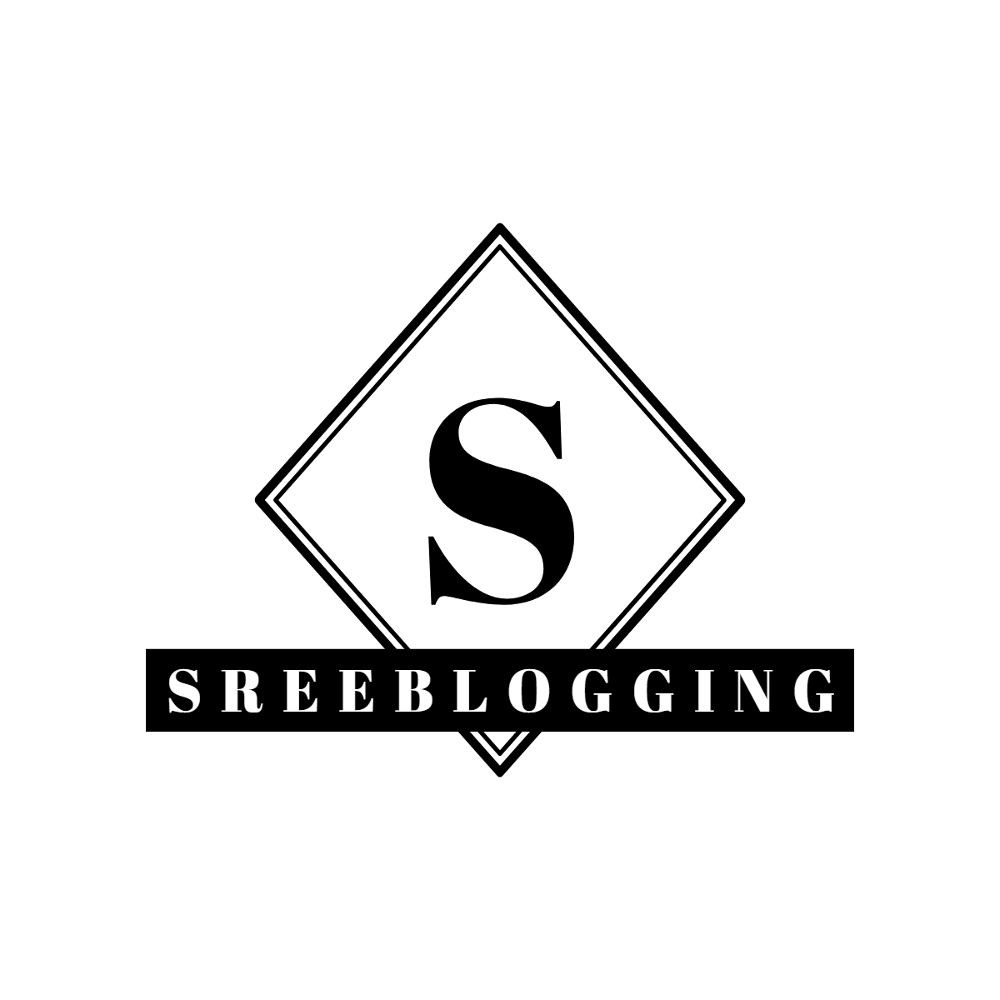
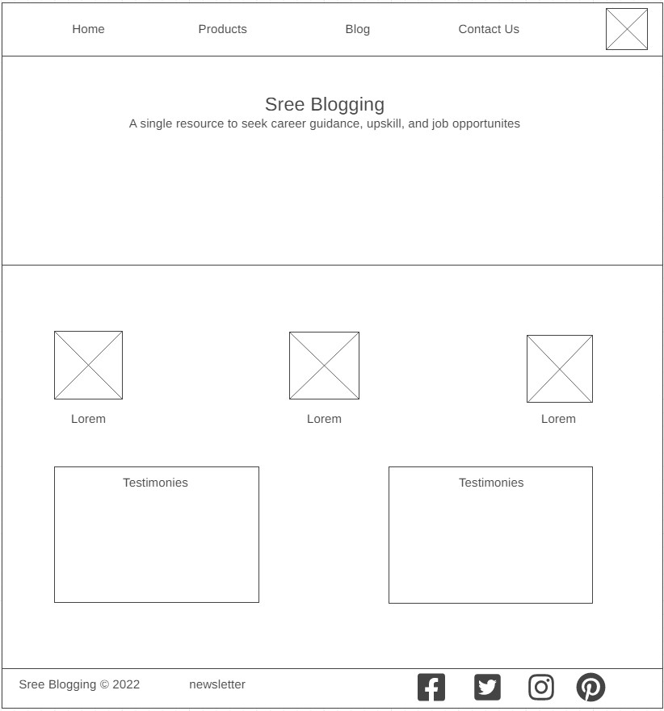
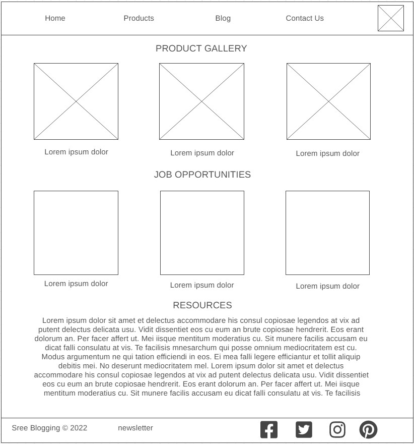
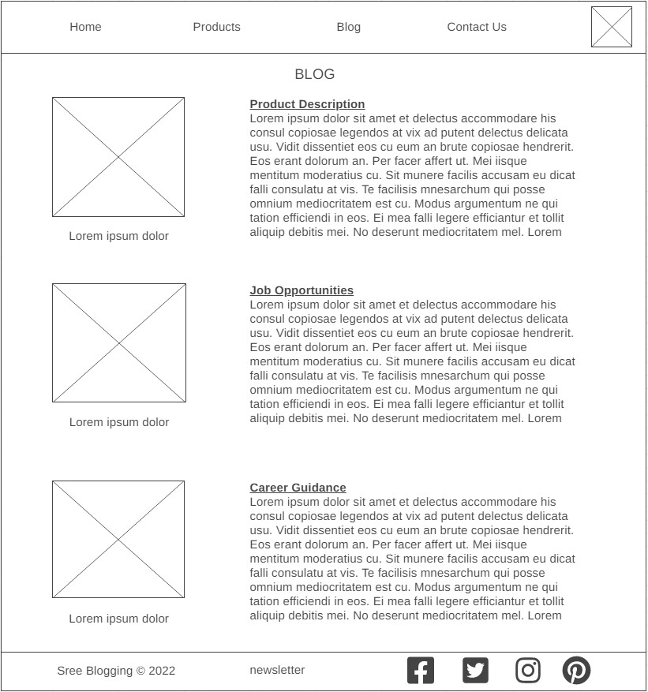

Overview
Purpose
Do you need to improve your skills please follow sreeblogging for resources to improve your skills paid and unpaid, career guidance, job opportunites, web designers and developers, digital marketing for your every need. We are interested to grow your customer base by spreading your brand to every where or to create or upgrade your current website to an estore or whatever we are here to design and develop your website and do digital marketing at an affordable prices.
Audience
sreeblogging is an exciting blog that can be relished to all age groups. It's a blog curated to help and guide the people who're interested to educate themselves or help others with their education. Also we are web designers and developers from startups to corporate websites to create or upgrade their existing to newer website.
Branding
Website Logo
Style Guide
Color Palette
Palette URL: https://coolors.co/1e3888-47a8bd-f5e663-ffad69-9c3848| Primary | Secondary | Accent 1 | Accent 2 |
|---|---|---|---|
| #1e3888 | #47a8bd | #f5e663 | ffad69 |
Typography
Heading Font: Rock Salt
Paragraph Font: Roboto Serif
Normal paragraph example
Do you need to improve your skills please follow sreeblogging for resources to improve your skills paid and unpaid, career guidance, job opportunites, web designers and developers, digital marketing for your every need. We are interested to grow your customer base by spreading your brand to every where or to create or upgrade your current website to an estore or whatever we are here to design and develop your website and do digital marketing at an affordable prices.
Colored paragraph example
sreeblogging is an exciting blog that can be relished to all age groups. It's a blog curated to help and guide the people who're interested to educate themselves or help others with their education. Also we are web designers and developers from startups to corporate websites to create or upgrade their existing to newer website.
Navigation
Site Map
Content
Home page
If you need to improve your skills, please follow sreeblogging for resources to improve your paid and unpaid skills, career guidance, and job opportunities as we provide industry-wise information to educate every job seeker. We are also web designers and developers, and do digital marketing for your every need to gain visibility of the website and branding of the products to increase your customer base all around the world.
We are interested to grow your customer base by spreading your brand everywhere by customizing your website or product according to your need and requirement. We create or upgrade your current website to an e-store or whatever your requirement we are here to design and develop your website and do digital marketing at an affordable price as we are having profound knowledge as well as experience in HTML, CSS, JavaScript, and other programming languages.
Apart from web designing we also increase your customer base by branding your website through Google, Facebook, Instagram, and other social media platforms according to your budget by improving the content by optimizing through SEO to increase the ranking of your website to improve its customer base globally.
We also support learners to educate themselves in upskilling coding and other programming languages by providing small projects to them.
Images for the Home page


Products
Product sourcing is one of the main tasks that web designers will be involved in, whether they work freelance or for an agency or company. Product sourcing includes finding new products, negotiating prices with suppliers, placing orders, and following up on delivery timescales.
Product sourcing is the process of finding a vendor or manufacturer who can provide a product or service to complete an order. Product sourcing is often done by an individual, but it may also be conducted by a company or organization.
The global product-sourcing industry has been experiencing rapid growth in recent years and is expected to continue doing so in the future. The industry is projected to grow at a compound annual growth rate (CAGR) of 3.9% from 2018-2023, reaching $1 trillion in value by 2023.
Product sourcing and procurement are part of the same broader category called supply chain management and both are used interchangeably in many contexts. The difference between them is that product sourcing focuses on finding suppliers for products, while procurement focuses on buying products from suppliers.
We also source products, especially for the oil and gas industry sector as we have experienced hand from these products, apart from these products we affiliate products by providing brief information about the product to educate our readers to choose their products.
Images for the Page 2

Blog
In our blog section, you will find paid and unpaid resources to improve your skills, career guidance, the latest job opportunities worldwide, product reviews, updates on new trends in all sectors, and many more to know and read.
The most popular career advice for web designers is to start with a blog. Blogging has become an important part of being a web designer because it provides an opportunity for self-expression, networking, and marketing. It can also help you get your name out there and establish yourself as an expert in your field.
You will find free resources to improve your skills in computer programming, web designing and developing; cyber security; personal development; public speaking; social media marketing; digital marketing; and many more subjects.
In career guidance section, will give a complete description of each career and its job opportunities. Apart from this, we will cover industries and their career opportunities to educate our readers to improve their skills according to the industry’s needs.
We post the latest job opportunities to our readers to help them to know all the opportunities in one place to save their searching time to improve themselves in upskilling their skills according to the industry needs.
Images for the Page 3

Wireframes
Create three wireframes for your site. One for each page and list them here
Home
Create an additional wireframe for your site. List it here below the Home page wireframe
Products
Create an additional wireframe for your site. List it here below the page 2 wireframe
Blog
Create an additional wireframe for your site. List it here below the page 3 wireframe
